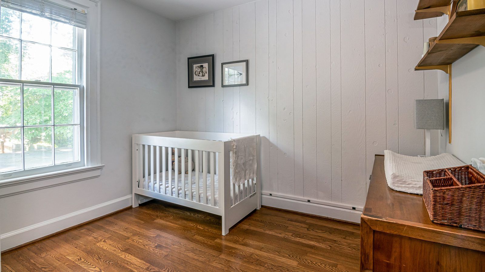

Itapema · Poder Público
Itapema · Poder PúblicoLevantamento próprio: 640 projetos de lei esperando decisão na Câmara de Itapema
A fila onde a lei do sono do bebê passou 321 dias.
A Lei nº 5.119 saiu no Diário Oficial dos Municípios nesta terça-feira, 15 de setembro, e já está valendo. Ela manda hospital e maternidade de Itapema orientar pai, mãe ou responsável sobre a posição certa de colocar o recém-nascido para dormir, antes de a família receber alta, como prevenção à Síndrome da Morte Súbita Infantil. O projeto entrou na Câmara em 23 de setembro de 2025 e foi sancionado em 14 de setembro de 2026, o que dá 356 dias. Pelo cadastro do Ministério da Saúde, a cidade tem 566 estabelecimentos de saúde e um só com centro obstétrico.
Em 30 segundos · Modo de Leitura, formato original Santa Informa
Itapema tem lei nova de saúde.
É a Lei nº 5.119.
Sancionada em 14 de setembro.
Publicada em 15 de setembro.
Já está valendo.
Ela fala do sono do bebê.
Hospital tem que orientar os pais.
Antes da alta, não depois.
O tema é a morte súbita infantil.
Risco maior: 28 dias a 4 meses.
O bebê dorme de barriga para cima.
Até um ano de idade.
Colchão firme e plano.
Berço sem travesseiro.
Sem cobertor solto e sem pelúcia.
No lugar do cobertor, saco de dormir.
Quarto dos pais por 6 meses.
Mas em cama própria.
A conversa é repetida na 1ª semana.
Itapema tem 566 unidades de saúde.
Uma só tem centro obstétrico.
É o Hospital Santo Antônio.
O projeto é de 2025.
Do vereador João Vitor de Souza.
Ficou 321 dias nas comissões.
Aprovado por 11 a 0.
A lei não prevê multa.
Poder PúblicoPublicada em Redação Santa Informa

A Lei nº 5.119 foi publicada no Diário Oficial dos Municípios nesta terça-feira, 15 de setembro, e entrou em vigor na data da publicação. Ela obriga os hospitais e as maternidades de Itapema a orientar o pai, a mãe ou o responsável legal sobre o posicionamento adequado do recém-nascido durante o sono, antes da alta hospitalar. O assunto é a Síndrome da Morte Súbita Infantil, que a própria lei descreve como súbita e inesperada, em bebês aparentemente saudáveis, com risco maior entre 28 dias e 4 meses de vida. O projeto entrou na Câmara em 23 de setembro de 2025 e foi sancionado pelo prefeito em 14 de setembro de 2026. São 356 dias entre uma data e a outra.
A lei é detalhada, e isso é raro. O bebê dorme de barriga para cima, em todas as sonecas e à noite, até completar um ano. O colchão é firme e plano, de preferência de berço com certificação de segurança, coberto por lençol com elástico. Berço, moisés ou cercado ficam sem travesseiro, sem lençol solto, sem cobertor, sem edredom, sem protetor acolchoado e sem bicho de pelúcia. No lugar do cobertor, saco de dormir, para evitar sufocamento e superaquecimento. Nos primeiros seis meses, o bebê fica no quarto dos pais, perto da cama deles, mas na superfície de dormir dele. A lei também manda listar os fatores de risco, entre eles dormir de bruços, cigarro na gravidez e depois do parto, dividir a cama com o bebê e excesso de roupa. E não basta entregar um papel: o texto exige aconselhamento verbal com confirmação de que os pais entenderam, e demonstração prática de como arrumar o berço. O profissional que acompanha o recém-nascido na primeira semana precisa repetir tudo.
O Cadastro Nacional de Estabelecimentos de Saúde, do Ministério da Saúde, lista 566 estabelecimentos em Itapema, de consultório odontológico a farmácia. Só um tem centro obstétrico e centro neonatal: o Hospital Santo Antônio de Itapema, no bairro Casa Branca. Como a lei fala em orientação antes da alta hospitalar, é ali que ela vale na prática. Quem mora aqui e tem o bebê em outro município recebe alta de um hospital que não está sob a regra de Itapema, e nesse caso sobra a parte da lei que manda repetir a orientação na primeira semana de vida.
A tramitação explica o resto. O Projeto de Lei 548/2025 é do vereador João Vitor de Souza e foi lido em plenário em 30 de setembro de 2025. Seguiu para três comissões e ficou lá. Os pareceres favoráveis das três, Legislação, Educação e Saúde, e Finanças, foram registrados no mesmo dia, 17 de agosto de 2026, 321 dias depois da leitura. No dia seguinte o plenário aprovou em votação única, com 11 votos favoráveis, nenhum contrário, nenhuma abstenção e uma ausência. O texto foi para o Executivo em 21 de agosto e voltou sancionado 24 dias depois. Em 9 de setembro nós mostramos que a Câmara de Itapema tem 640 projetos de lei esperando decisão. Este era um deles.
O resumo de 30 segundos está no topo e a versão completa é o texto acima. Aqui ficam as três leituras da casa sobre o mesmo assunto.
Clara, a otimista
Essa é daquelas leis que custam quase nada e podem render muito. Não pede obra, não pede compra de equipamento, não cria cargo. Pede conversa de cinco minutos com pai e mãe que estão saindo da maternidade com o primeiro filho no colo e a cabeça a mil.
E a parte boa está no detalhe. A lei não se contenta com folheto: manda falar, manda conferir se a família entendeu e manda mostrar o berço arrumado do jeito certo. Quem já saiu de hospital com bebê recém-nascido sabe que orientação falada e repetida é a única que gruda.
Seu Prudêncio, o criterioso
Merece atenção o tempo. Um projeto de saúde preventiva que entra em setembro de 2025 e vira lei em setembro de 2026, com 321 desses dias parados em comissão, mostra que a fila da Câmara não separa o que é simples do que é complicado. Não houve um voto contrário quando a coisa finalmente foi ao plenário.
Vale acompanhar também a ausência de prazo e de sanção. A lei manda regulamentar o que couber, sem dizer até quando, e não prevê nenhuma consequência para quem não cumprir. Na prática, a aplicação vai depender da Secretaria de Saúde chamar o único hospital com sala de parto da cidade para combinar como fazer.
Uma sugestão útil: publicar, junto com a regulamentação, um modelo do material informativo e o roteiro da conversa. O texto da lei já traz a lista inteira do que precisa ser dito, então o trabalho está quase pronto e evita que cada plantão explique de um jeito.
Dito isso, o mérito é claro. A recomendação de dormir de barriga para cima é consenso reconhecido há décadas e continua sendo pouco falada na alta. Transformar isso em obrigação escrita, com demonstração prática e reforço na primeira semana, é do tipo de medida barata que pode salvar vida de bebê da cidade.
Caco, o sarcástico
Trezentos e cinquenta e seis dias para aprovar uma lei que manda avisar que bebê dorme de barriga para cima. Pelo menos ninguém pode dizer que foi decisão precipitada.
Também gostei da parte em que o projeto ficou 321 dias em três comissões para, no fim, receber parecer favorável das três no mesmo dia. Um estudo minucioso, claramente, e todo ele concentrado na tarde de 17 de agosto.
Mas a lei saiu, é curta, é clara e diz exatamente o que fazer. Demorou, mas chegou inteira. Já vi coisa chegar bem pior e bem mais rápido.
Fontes: o texto integral da lei, a obrigação de orientar antes da alta, a lista do que a orientação precisa conter, a faixa de 28 dias a 4 meses, o prazo de um ano para o posicionamento de barriga para cima, os seis meses no quarto dos pais, a exigência de aconselhamento verbal e demonstração prática, a assistência psicológica às famílias, a ausência de multa e a entrada em vigor na data da publicação estão na Lei nº 5119, de 14 de setembro de 2026, publicada pela Prefeitura de Itapema no Diário Oficial dos Municípios de Santa Catarina em 15 de setembro de 2026. A autoria do vereador João Vitor de Souza, a data de entrada em 23 de setembro de 2025, a leitura em 30 de setembro de 2025, o envio às três comissões, o registro dos pareceres favoráveis em 17 de agosto de 2026, a aprovação em 18 de agosto com 11 votos favoráveis e uma ausência e o envio ao Executivo em 21 de agosto estão na página do Projeto de Lei Ordinária 548/2025, no portal da Câmara de Vereadores de Itapema. Os 566 estabelecimentos de saúde de Itapema e o único com centro obstétrico e centro neonatal foram levantados por nós na base aberta do Cadastro Nacional de Estabelecimentos de Saúde, do Ministério da Saúde, consultada em 16 de setembro de 2026. As contagens de dias são contas nossas sobre as datas oficiais. O tamanho da fila de projetos na Câmara está no nosso levantamento Câmara de Itapema tem 640 projetos de lei esperando decisão.
Itapema · Poder PúblicoA fila onde a lei do sono do bebê passou 321 dias.
Como a Câmara tem despachado o acúmulo de projetos.
 Itapema · Poder Público
Itapema · Poder PúblicoO que mais esteve na pauta do plenário em setembro.